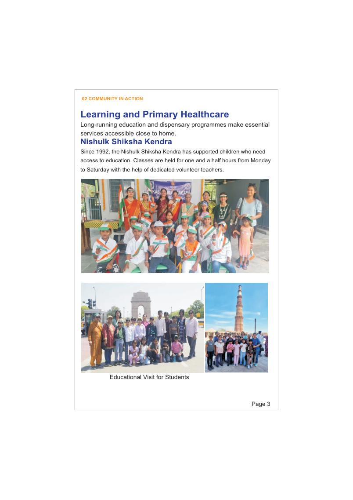
Education
Nishulk Shiksha Kendra
Supporting children's access to education since 1992, with classes Monday to Saturday and the help of volunteer teachers. The centre also supports library and computer learning.
Serving the community with compassion and dignity since 1991. Vikas Mahila Sangam brings learning, accessible care and practical support closer to families in East Delhi.
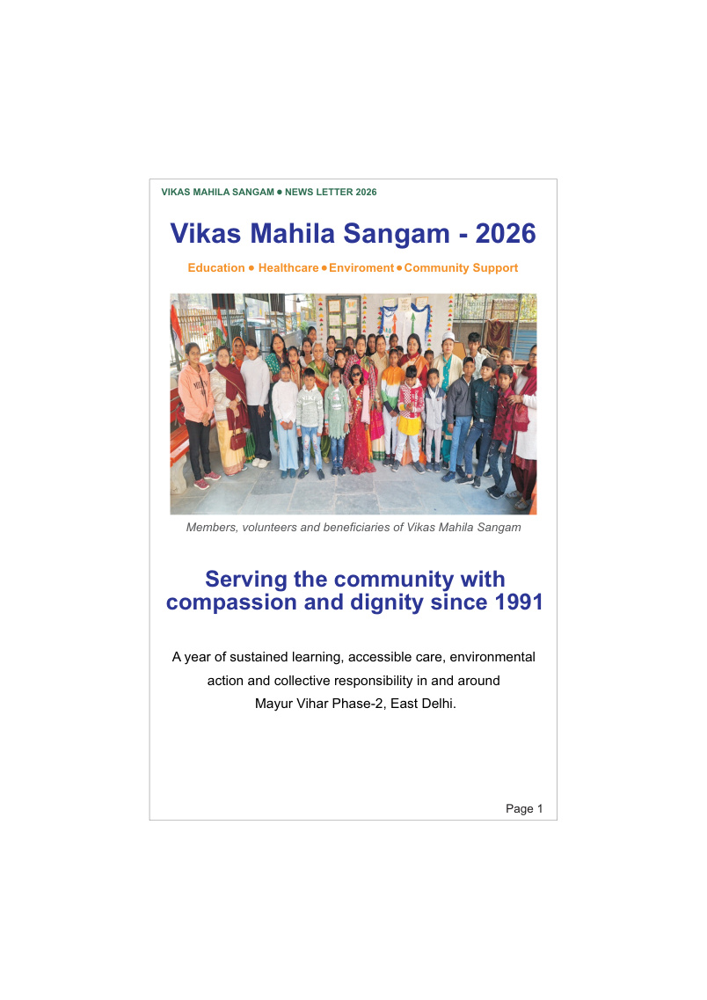
Vikas Mahila Sangam (VMS) is a voluntary, non-governmental and non-political women's social organisation. Founded in 1991 by Mrs Surinder Mahajan and Mrs Kamini Mathur, it works to support economically and socially disadvantaged women, children and older people.
Formally registered in 1997 under the Societies Registration Act, 1860 (Registration No. S-31338), VMS is affiliated with the All India Women's Conference.
Our work focuses on practical, local support—so families can access learning, health services and community initiatives close to home.
Our programmes respond to everyday needs through education, health, environmental awareness and community care.

Supporting children's access to education since 1992, with classes Monday to Saturday and the help of volunteer teachers. The centre also supports library and computer learning.
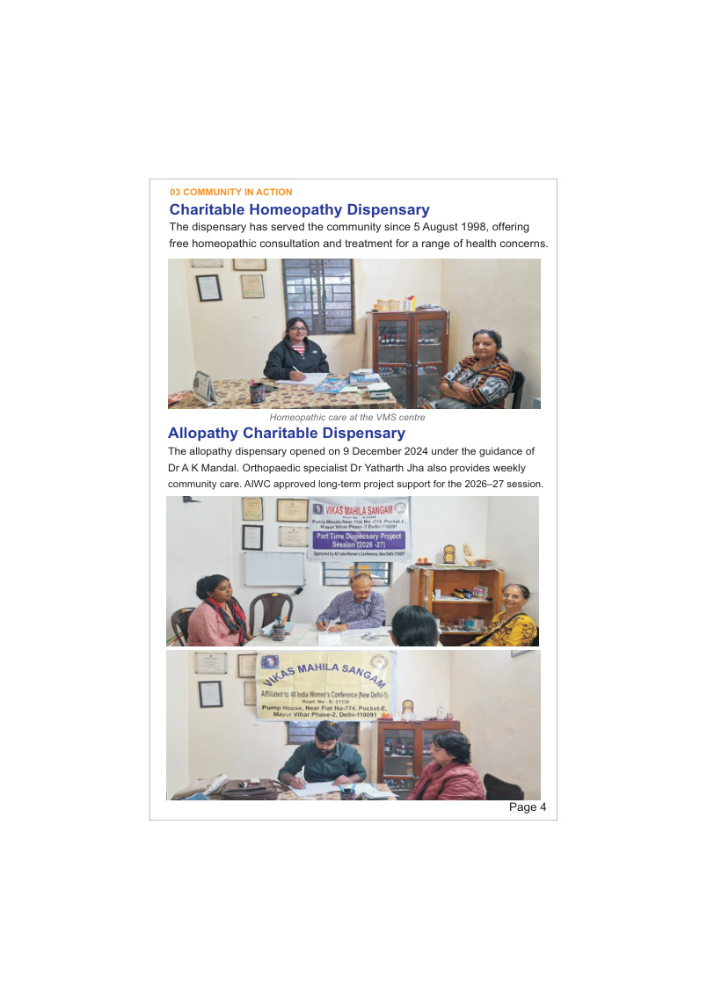
The homeopathy dispensary has served the community since 5 August 1998. An allopathy charitable dispensary opened on 9 December 2024, with additional specialist community care.
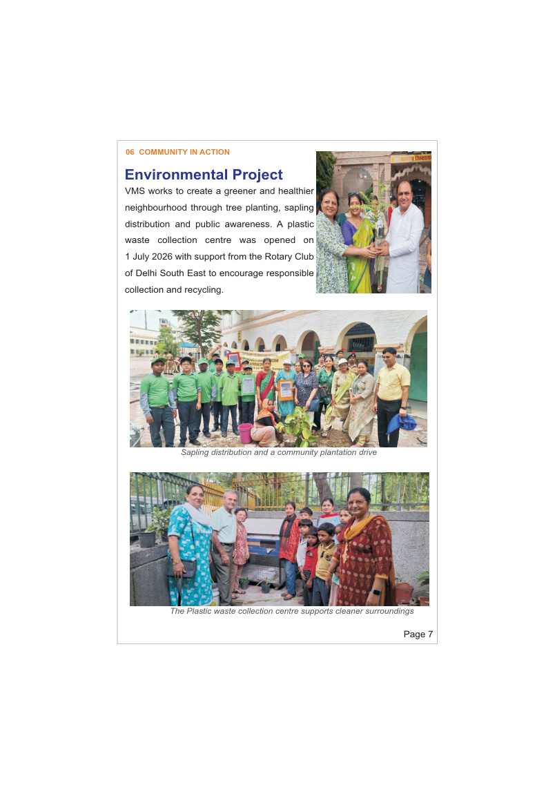
Tree planting, sapling distribution and public awareness encourage environmental responsibility. A plastic waste collection centre opened on 1 July 2026 with support from Rotary Club of Delhi South East.
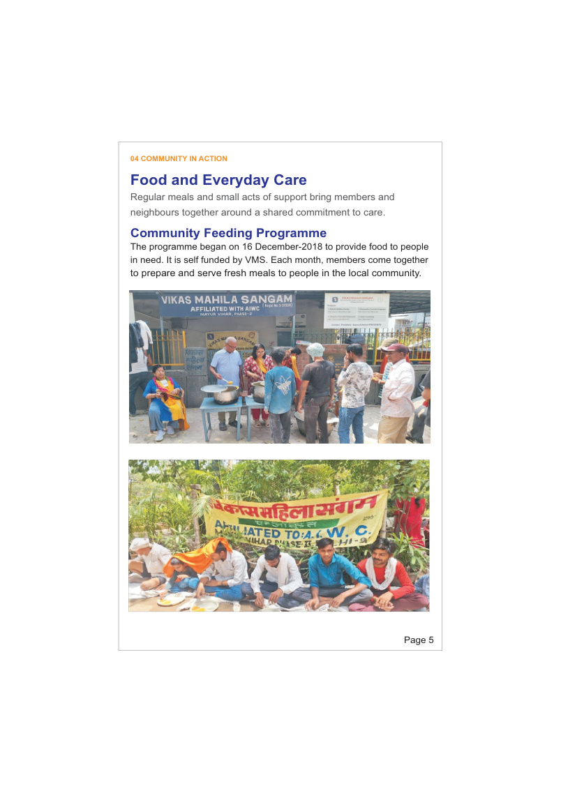
Started on 16 December 2018, this self-funded initiative brings members together each month to prepare and serve fresh meals to people in need.
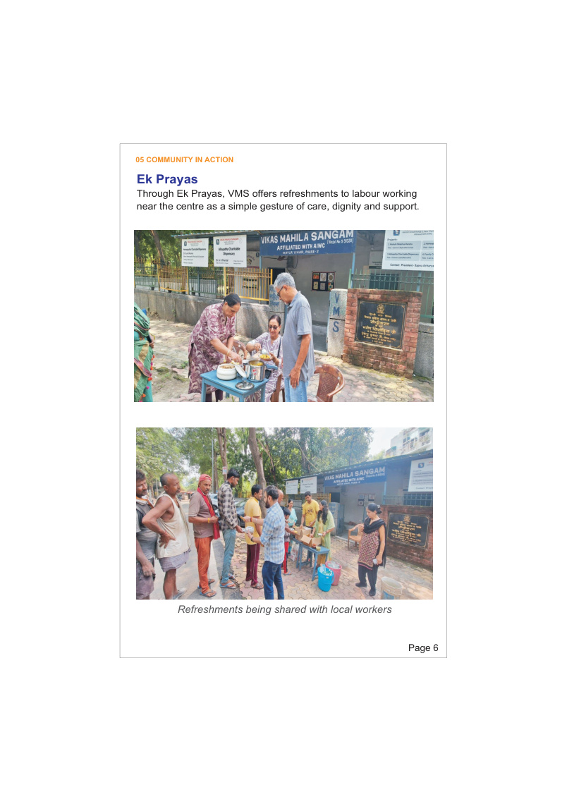
Refreshments are offered to labourers working near the centre as a simple gesture of care, dignity and support.
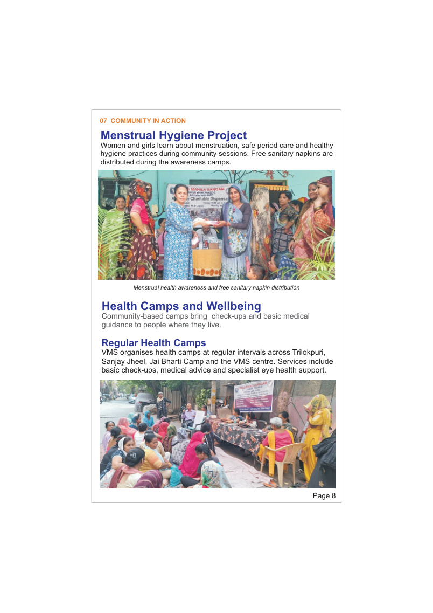
Regular camps offer basic check-ups, medical guidance and eye-health support. Sessions also address menstrual hygiene, women's safety, anaemia and healthy living.
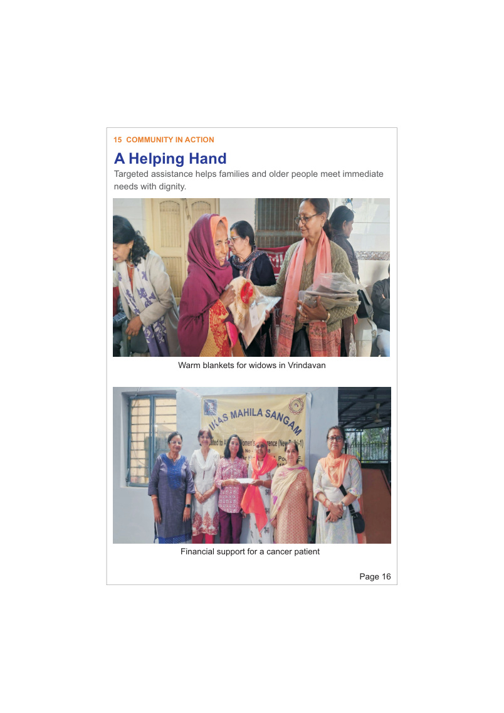
Support has included warm blankets for widows, groceries for an older citizen, local blanket distribution and financial assistance for a cancer patient.
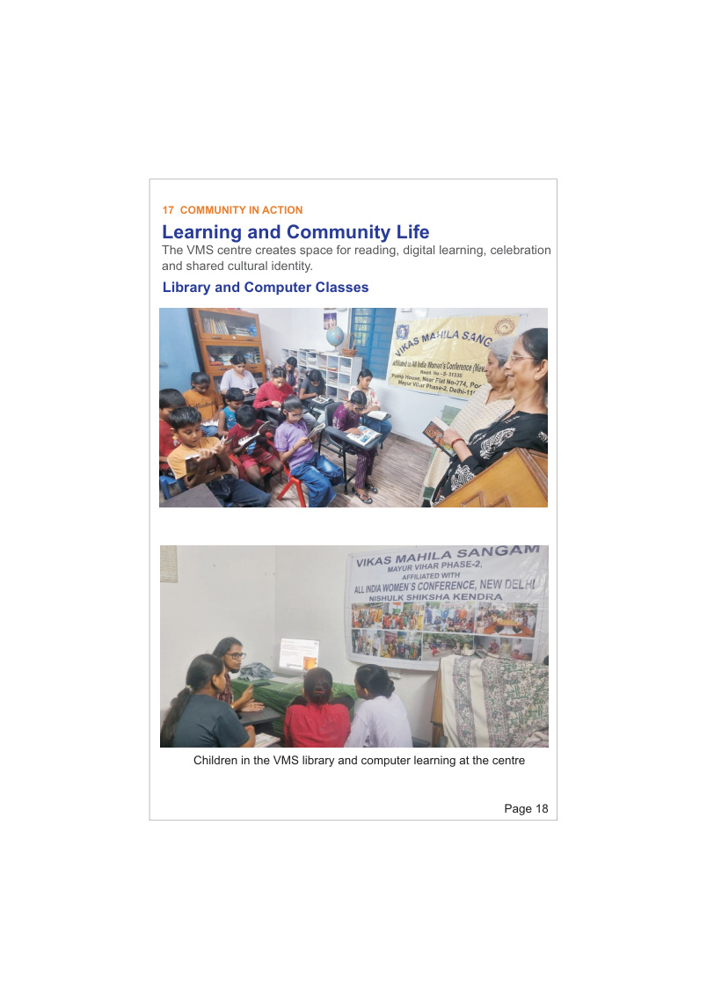
The VMS centre creates space for reading, digital learning and opportunities for children to build confidence and skills.
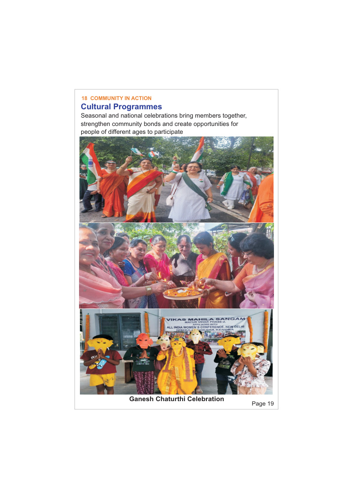
Seasonal and national celebrations, Amritvani gatherings and community performances strengthen connections across generations.
VMS primarily supports domestic workers, gardeners, press workers, migrant labourers and other economically weaker communities in and around Pocket E, Mayur Vihar Phase-II, including Jai Bharti Camp, Sanjay Jheel, Kalyanpuri and Trilokpuri.
Partnerships, volunteers and local participation help extend the reach of our programmes. VMS has worked with community partners and organisations on health, women's safety, environmental awareness and national integration.
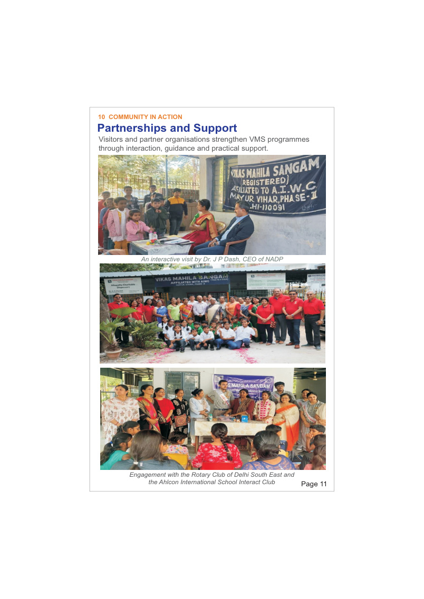
A selection of programme highlights from the VMS 2026 newsletter. Select an image to view it larger.
Interested in volunteering, supporting a programme or learning more about VMS? Reach out or visit the centre.
Address
Pump House, Near Flat No. 774, Pocket-E,
Mayur Vihar Phase-II, Delhi – 110091
Organisation
Registration No. S-31338
Affiliated to All India Women's Conference
Volunteers and community partners are an important part of our work. Connect with VMS to enquire about education, healthcare, environmental and community-support initiatives.
Email / Phone
Please add your organisation's approved public email address and phone number here before publishing.